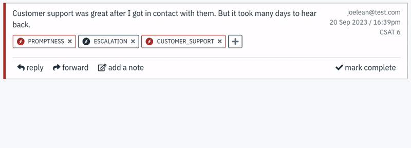
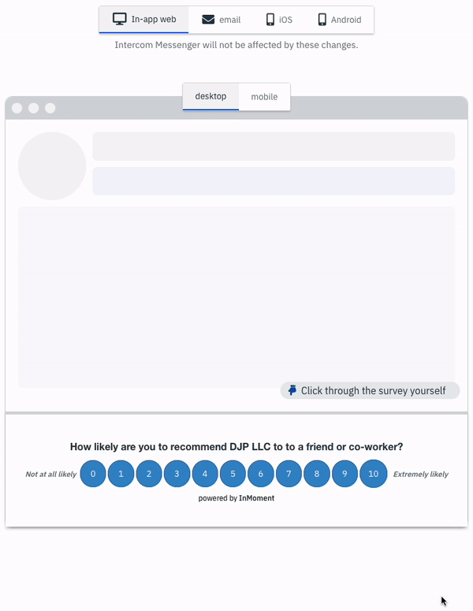
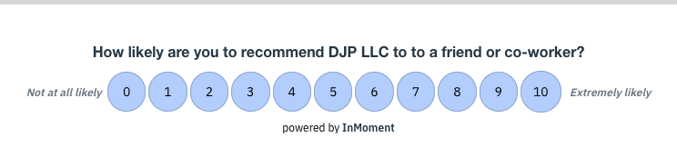
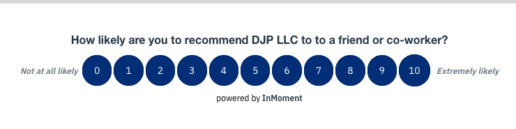

Project 1: Using AI to Close-the-loop
Led the redesign of how AI-driven insights were surfaced and actioned. The project focused on two goals: helping teams close the loop with customers more efficiently, and unifying visibility into that activity across integrated platforms. I architected the data flow so that responses synced from third-party integrations into the database and through to the CXI platform, giving customers clear confirmation when their feedback had been addressed. The AI insights within CXI helped customers surface the highest-impact survey responses out of a pool of millions, so teams could prioritize where reaching out to customer would matter most.

An example of how the process of turning customer feedback into actionable results starts.
Project 2: Unified Customer Data Across Platforms
After Press Ganey purchased us, I identified and led an effort to consolidate customer data that was previously siloed across platforms like Salesforce, Intercom, our own database, Recurly, and scattered spreadsheets — accessible only to individual account managers rather than the company at large. I pitched the initiative to leadership, then designed the schema and architecture for a unified customer database, including linking individual accounts to their parent organizations for the first time. We used Holisitics a self-service BI platform. This gave Press Ganey a company-wide view of the Wootric platform for the first time and became a foundational data asset for cross-functional teams. The visibility it created directly led to new upsell opportunities with customers likely to pay more, and recovered sales from demoed accounts that had previously fallen through the cracks.
Project 3 - Custom Designs Across Web, Email, iOS and Android
A design that took awhile was implementing custom survey designs that would work across all channels. For a survey to work on any email platform and still look and feel the same on an iOS and Android app is a harder feat than one might assume. Especially as we wanted to make sure no matter what the customer chose, the survey would still meet accesibilty standards.

The admin showing examples of how the same design would appear across channels.
Project 4 - Web Survey Accessibility
An effort across the entire platform from surveys, to admin, to dashboards was to meet WCAG AAA accessiblility standards.
For example, depending on the color you've set for a background the font will automatically be black or white to maximize its readability and accessibility. And an error will appear letting you know if the contrast doesn't meet AA or AAA readibility in the outlier cases.


Auto adjusting font on every device.